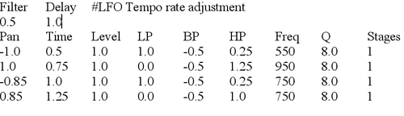

|
Echotron
Multi-tap delay with virtually unlimited taps (limited to 127,
but if more than that is desired, use Reverbtron). In the most
simple case, assign the timing and spacing of delay taps in a simple
text file, then load as a custom "user" file. Tempo is normalized
to 1 measure = 1 Second at 60 beats per minute. Simply think of a
"1.0" in the time column of the text file as "one measure". For
example, if you want 8th note echoes at Tempo, assign delays in
multiples of 0.125. Potential musical subdivisions are limited
only by your creativity and ability to do fractional mathematics as
pertains to musical rhythm and timing. If you don't like math,
but you like to experiment, then simply try a bunch of numbers less
than 6 and see what happens. Maybe someday we will make a GUI
editor to generate the text files
A more advanced feature of Echotron is the assignment of filters in each
delay line tap. In the text file, you can configure a state-variable
filter with center frequency, resonance, and individually mix the 3
bands, as with MuTroMojo. Up to 32 filters may be configured in the text
file. If you wish to bypass a filter in any line of the file, set
Stages to 0 (zero). The first 32 occurrences of filters with stages
greater than 0 will be processed. Any filter parameters defined after
the first 32 are ignored.
You can assign left/right panning in the text file to create interesting rotational
patterns.
There is a maximum delay time of 6 seconds, but there is no minimum
delay time; for example, a delay time of zero is perfectly acceptable
if using the filters to create a phaser or wah wah (be careful with the
feedback parameter). Other small delay times are possible for
creating chorus and flanger effects. You may also set the delay
times the same for multiple taps if you wish to create a comb filter
with the state variable filter, or even an 8-band equalizer is possible.
From the GUI, you can enable/disable the filters, enable/disable filter
modulation, enable/disable delay line modulation, and all is
synchronized to Tempo. You may also limit the number of Taps
processed from the file.
This effect is the swiss army tool for stereo ping-pong and rotational
delays, flangers, phasers (thanks to state variable filter) and even
stereo spatialization techniques. Hopefully we have done a good
job demonstrating the most noteworthy possibilities in the default
files installed with Rakarrack.
Here is a description of the parameters:
Wet/Dry: Mix unprocessed signal with processed output.
Pan: Pan processed output to left or right channel.
Tempo: Beats per minute. Synchronizes with master TapTempo.
Damp: High frequency damping in the feedback loop.
Fb: Amount of Feedback (regeneration)
L/R Cr.: Amount of blending left
& right channels. Less than zero means subtract left from right
& right from left. Greater than zero means adding left to
right, right to left. At +/-32 left & right are mixed
50/50. At +/-64, left/right are completely swapped.
Width: Width of the LFO. This adjusts the LFO amplitude.
Depth: Filter center
frequency. "0" means it is centered on the frequency designated
in the text file. >0 Shifts the filter up in frequency, <0
shifts them down. This is a good parameter to assign to a MIDI
expression pedal.
St. df: Sets stereo time difference between LFO right and left
channels.
LFO Type: Select the modulation shape.
AF: Activate Filters. If the box is checked, filters defined in the
text file will be applied to the delay taps.
MF: Modulate Filters. If the box is checked, modulation will be
applied to the filters' cut-off frequencies.
MD: Modulate Delays. If the box is checked, the delay line will be
modulated (like a chorus or flanger).
#: Sets the number of taps to process sequentially from the text
file. For example, if you have a text file that defines 20
echoes, you can limit it to use the first 2 or 3 or....whatever you
want up to 127.
File: Select from several files supplied by the Rakarrack team. This
will include a broad spectrum of uses so you can get started using
Echotron without ever touching a text file.
User: So you want to do
something you can't do with one of the default files. You edit
your own text file with the desired delay times, levels, and filter
pattern, browse to this file, select, and voila! Your Echotron has
morphed into a completely unique effect.
Text Files
Below is an example text file with explanation of each field and any caveats you may need to
know: 
Filter: This field multiplies the tempo for the filter
LFO modulation. For example, if you are playing a song at 80 beats per
minute, but you wish to make the LFO half as fast as the echoes, you
enter a 0.5 in this field to adjust the filter LFO speed to 40 beats
per minute.
Delay: This field multiplies tempo for the delay line
modulation. Same concept as for filter, but this is the LFO applied to
the delay line. Note there is not a field for delay time subdivision.
This is because you define this by the times you put into the Time
column, so such a field would be redundant.
Pan: Ranges from -1.0 to 1.0. less than 0.0 is pan left,
greater is pan right. 0.0 puts the delay equally to left and
right. Anything magnitude of +/-1.0 or greater will be treated as
extreme left or right.
Time: This is the real time at 60 beats per minute. An
easier way to think of this as a musician is increments of
measures. "1.0" means 1 measure at the tempo selected in the
effect GUI. The above indicates a quarter note in the first line,
and a 1/2 note in the second line.Ranges from -6.0 to 6.0
Level: how loud you want the echo to return. 1.0 returns it
exactly as loud as it came it. More makes it come back louder,
less makes it softer. You can use both positive and negative
numbers.Ranges from -2.0 to 2.0
LP: Mix State variable Low Pass Filter amount.
BP: Band pass filter amount.
HP: High Pass Filter amount.
*For LP, BP, and HP when filters are activated, these also adjust the
level. If you don't want the filter to have an effect at a
certain time, then set LP, BP, and HP all to 1.0.Ranges -2.0 to 2.0
Freq: Filter center frequency.Ranges 20.0 to 20000.0
Q: Filter resonance.Ranges 0.0 to 300.0
Stages: Number of filter stages. This is virtually
unlimited, but you can crash your CPU with the processing requirement
if you aren't careful.Ranges 1 to 16
Caveats:
Always separate the fields with a <TAB>, and not spaces. Echotron looks specifically for TAB
separation.
You can enter as many lines as you want, but only the first 127 will be used by the program.
There are only 8 filters available. After the 8th line, filter parameters are ignored by the
program.
It is not wise to set Q values greater than 300, but there is no
arbitrary limit. At some high range the filter is likely to go
unstable.
It is not wise to set Level greater in magnitude to +/-1.0. There
is some normalization internal to Echotron, but it is best to think of
1.0 as the volume knob's maximum range.
It is best to copy one of the default files distributed with Rakarrack
and edit it as desired. Always save with an extension .dly so you
don't confuse it with other kinds of text files.
|